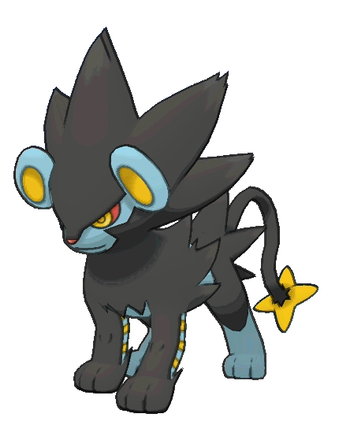

My favourite Pokemons

Crobat
- Weaknesses: Electric, Ice, Psychic, Rock
- Ability (hidden): Infiltrator
- Ability: Inner Focus
- Category: Bat Pokémon

Scolepede
- Weaknesses: Flying, Psychic, Fire, Rock
- Ability (hidden): Speed Boost
- Ability: Poison Point, Swarm
- Category: Megapede Pokémon

Gengar
- Weaknesses: Ghost, Psychic, Dark
- Ability (hidden): —
- Ability: Cursed Body
- Category: Shadow Pokémon

Metagross
- Weaknesses: Fire, Ghost, Ground, Dark
- Ability (hidden): Light Metal
- Ability: Clear Body
- Category: Iron Leg Pokémon

Krookodile
- Weaknesses: Water, Ice, Grass, Fighting, Bug, Fairy
- Ability (hidden): Anger Point
- Ability: Intimidate, Moxie
- Category: Intimidation Pokémon

Luxray
- Weaknesses: Ground
- Ability (hidden): Guts
- Ability: Rivalry, Intimidate
- Category: Gleam Eyes Pokémon